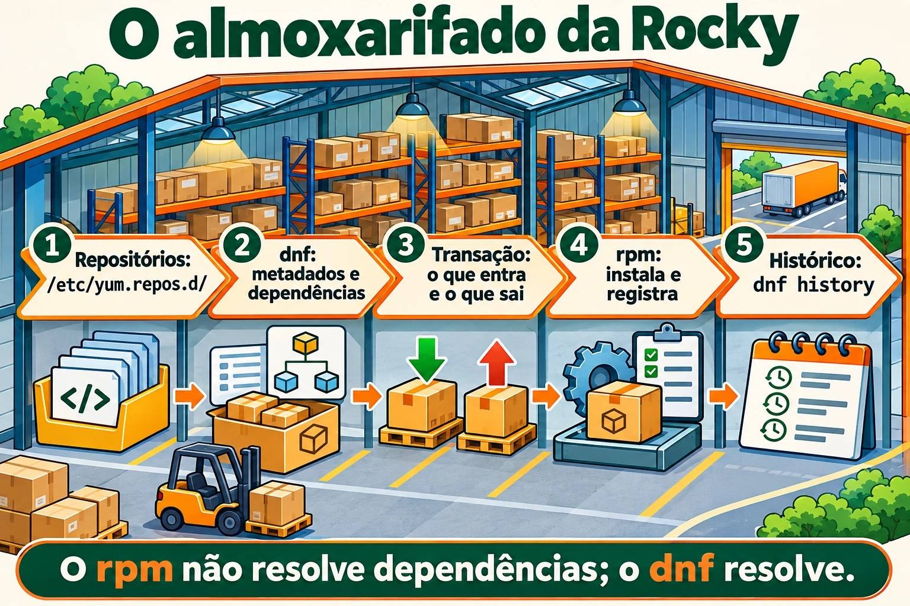
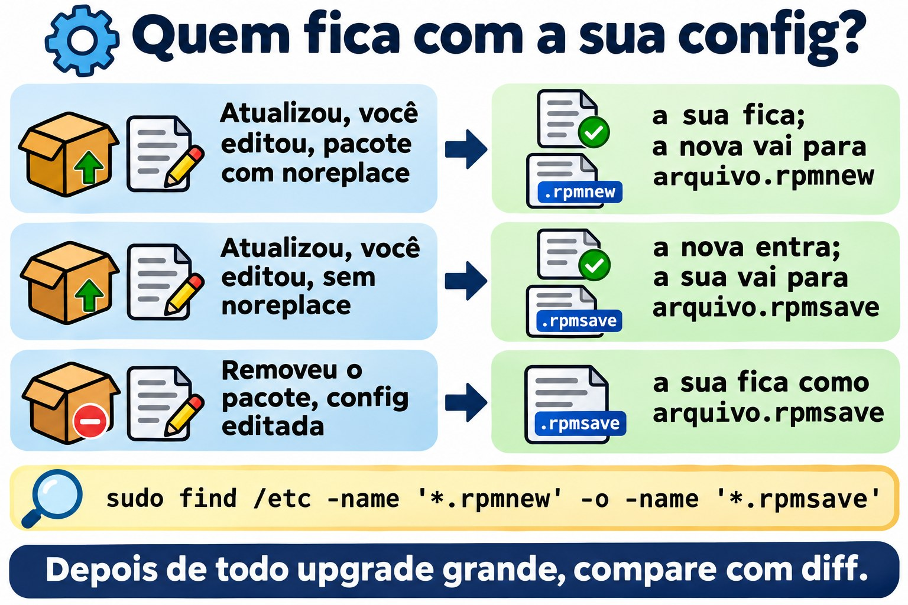
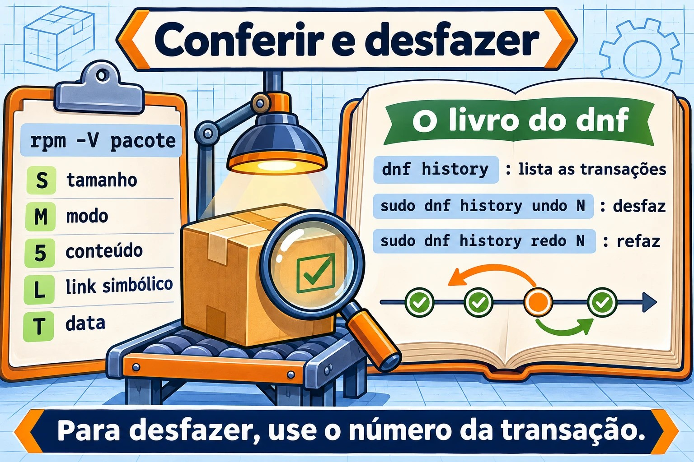

Aula 6.2 · Pacotes na Rocky
Na aula passada você aprendeu o mundo Debian: apt compra, dpkg guarda. Hoje é o mesmo almoxarifado com outros nomes: dnf compra, rpm guarda. A lógica é igual, então esta aula anda mais rápido. O que a Rocky tem de diferente, e muito bom, é o histórico com desfazer (dnf history undo) e a verificação de integridade (rpm -V). Os dois salvam servidor em produção.
Núcleo desta aula:
dnf install/remove/upgrade/search/info/provides,dnf install ./arquivo.rpm,rpm -qa/-qi/-ql/-qc/-qf,rpm -V,dnf historyednf history undo,.rpmnewe.rpmsave. O resto é aprofundamento.
| Ficha | |
|---|---|
| Módulo | M6 · Software, aula 2 de 5 |
| Quando | Semana 10 |
| Ao final você consegue | Instalar, remover e atualizar pacotes com dnf; descobrir dono e conteúdo de pacotes com rpm; verificar se alguém alterou arquivos de um pacote; desfazer uma transação pelo histórico |
| Pré-requisitos | Aula 6.1 · rocky-lab com internet |
| Tempo | ~2h30 |
| Snapshots | m6a2-inicio e m6a2-fim, só na rocky-lab (201). A debian-lab descansa |
1 · Aquecimento
Responda antes de ler. O gabarito está no fim da aula.
- O
rpm -i pacote.rpmbusca as dependências que faltam? - Você instalou um pacote ontem e ele quebrou um serviço. Na Rocky, dá para desfazer aquela instalação inteira, dependências inclusas, com um comando só?
- Você desconfia que alguém alterou o
/etc/ssh/sshd_confige o binário dosshd. Existe um jeito de perguntar ao sistema "o que mudou desde que o pacote foi instalado?"
2 · Por que importa
| O chamado | A resposta errada | O que ela causa |
|---|---|---|
| "Instala o agente de backup no servidor" | Baixar um .rpm de um site qualquer e rodar rpm -ivh --nodeps | Pacote sem as bibliotecas de que precisa, que falha depois, e um banco rpm que o dnf passa a reclamar |
| "Atualizaram ontem e o serviço parou" | Reinstalar pacotes no chute, ou rpm -e --nodeps no que parecer culpado | Horas de tentativa e erro. O dnf history mostraria a transação exata, e o undo a desfaria |
| "O sshd está estranho, alguém mexeu?" | Abrir os arquivos e olhar "no olho" | Você não vê um binário trocado nem uma permissão alterada. O rpm -V openssh-server mostra em segundos |
"O comando semanage não existe aqui" | Pesquisar no Google e instalar o primeiro pacote sugerido | Pacote errado, ou de outra versão. O dnf provides responde com o pacote certo do seu repositório |
3 · Modelo mental
É o mesmo almoxarifado da aula 6.1. O rpm é o almoxarife: instala um pacote por vez, guarda o registro de tudo e confere se nada foi mexido. O dnf é o comprador: lê os catálogos dos repositórios, calcula as dependências, baixa tudo e entrega ao rpm. A diferença é que este comprador anota cada compra num livro numerado. E qualquer compra do livro pode ser devolvida.
/etc/yum.repos.d/*.repo (de onde comprar)
|
v
dnf --- baixa metadados ---> /var/cache/dnf/ (catálogos e .rpm baixados)
|
| resolve dependências, monta a transação
v
rpm --- instala ---> banco rpm (/var/lib/rpm) (o que está instalado, arquivo por arquivo)
|
v
/var/lib/dnf/history.sqlite (o livro: transação 1, 2, 3... com undo)
/var/log/dnf.log, /var/log/dnf.rpm.logNas versões mais novas da família RHEL, o banco rpm mora em /usr/lib/sysimage/rpm e /var/lib/rpm aponta para lá. Para você, tanto faz: quem conversa com o banco é sempre o rpm.


4 · O essencial
dnf: o dia a dia
| Comando | O que faz |
|---|---|
dnf check-update | Lista o que tem atualização (não instala nada) |
sudo dnf upgrade | Atualiza tudo (dnf update é o mesmo comando, nome antigo) |
sudo dnf upgrade X | Atualiza só o pacote X |
dnf search termo | Procura no nome e no resumo |
dnf info X | Versão, repositório, tamanho, descrição |
dnf provides /caminho ou dnf provides '*/semanage' | Qual pacote fornece esse arquivo (instalado ou não) |
sudo dnf install X | Instala com dependências |
sudo dnf install ./arquivo.rpm | Instala um .rpm local resolvendo dependências |
sudo dnf remove X | Remove X e as dependências que só ele usava |
sudo dnf reinstall X | Reinstala a mesma versão |
sudo dnf downgrade X | Volta para uma versão anterior, se o repositório tiver |
sudo dnf autoremove | Remove dependências órfãs |
dnf list installed / dnf list available | Instalados / disponíveis |
dnf repolist | Repositórios ativos |
sudo dnf clean all / sudo dnf makecache | Limpa o cache / baixa os metadados de novo |
Diferença importante para o Debian: o dnf não tem um passo update separado. Ele confere os metadados sozinho quando estão velhos. E o dnf remove já leva as dependências órfãs daquele pacote, sem esperar um autoremove.
Grupos: dnf group list mostra conjuntos prontos, e sudo dnf group install "Development Tools" instala um conjunto inteiro.
Segurança: dnf updateinfo list --security lista os avisos de segurança pendentes, e sudo dnf upgrade --security aplica só esses.
rpm: as perguntas ao almoxarife
Tudo que começa com -q (query) é só leitura e não precisa de sudo.
| Comando | Pergunta que responde |
|---|---|
rpm -qa | Tudo que está instalado (com | grep, é o seu dpkg -l) |
rpm -q X | X está instalado? Qual versão? |
rpm -qi X | Ficha do pacote: versão, data de instalação, origem |
rpm -ql X | Arquivos que X instalou (o dpkg -L) |
rpm -qc X | Só os arquivos de configuração de X |
rpm -qd X | Só a documentação |
rpm -qf /caminho | De que pacote é esse arquivo (o dpkg -S) |
rpm -qR X | Do que X depende |
rpm -q --changelog X | head | Histórico de mudanças do pacote (ótimo para achar CVE corrigida) |
rpm -q --scripts X | Scripts que rodam na instalação e na remoção |
rpm -qpi arq.rpm / rpm -qpl arq.rpm | Ficha e arquivos de um .rpm não instalado (o p é de package file) |
E as operações, que você deve conhecer, mas quase não usar no dia a dia:
| Comando | O que faz |
|---|---|
rpm -ivh arq.rpm | Instala (i), verboso (v), com barra de progresso (h). Não resolve dependências |
rpm -Uvh arq.rpm | Atualiza, ou instala se não existir |
rpm -Fvh arq.rpm | Atualiza só se já existir (freshen) |
rpm -e X | Remove (erase) |
--nodeps, --force | Ignoram as proteções. Em servidor, quase sempre são um erro |
rpm --import chave.asc | Importa uma chave GPG de repositório (mais na aula 6.3) |
rpm -K arq.rpm | Confere a assinatura e a integridade de um .rpm |
rpm -V: "o que mudou?"
O rpm guarda o tamanho, o hash, as permissões, o dono e a data de cada arquivo instalado. O rpm -V X compara tudo isso com o disco e só mostra o que mudou. Sem saída = nada mudou.
S.5....T. c /etc/ssh/sshd_config| Letra | Mudou o quê |
|---|---|
S | Tamanho |
M | Modo (permissões ou tipo) |
5 | Conteúdo (hash) |
D | Dispositivo |
L | Destino do link simbólico |
U / G | Dono / grupo |
T | Data de modificação |
c antes do caminho | É arquivo de configuração: mudar é normal |
missing | O arquivo sumiu |
Leitura de admin: 5 num arquivo c é alguém que editou a config, normal. 5 num binário em /usr/sbin é alarme. rpm -Va verifica o sistema inteiro (demora, e mostra muita config editada; filtre o que não tem c).
.rpmnew e .rpmsave
O Debian pergunta o que fazer quando você editou uma config e o pacote traz uma nova. O rpm não pergunta: ele decide pela regra do pacote e deixa um arquivo ao lado.
| Situação | O que o rpm faz |
|---|---|
Atualização, você editou a config, pacote marcou noreplace (o mais comum) | Mantém a sua. A nova vai para arquivo.rpmnew |
Atualização, você editou, pacote não marcou noreplace | Instala a nova. A sua vai para arquivo.rpmsave |
| Remoção de um pacote cuja config você editou | Apaga o pacote, e a sua config fica como arquivo.rpmsave |
Tarefa de manutenção depois de todo upgrade grande:
sudo find /etc -name '*.rpmnew' -o -name '*.rpmsave'Cada .rpmnew é uma config nova que ninguém comparou com a sua (diff entre os dois).


dnf history: o livro de compras
| Comando | O que faz |
|---|---|
sudo dnf history | Lista as transações: ID, comando, data, ação, quantidade |
sudo dnf history info N | Detalhe da transação N: quem, quando, cada pacote |
sudo dnf history list X | Só as transações que mexeram no pacote X |
sudo dnf history undo N | Desfaz a transação N (o que instalou, remove; o que removeu, reinstala) |
sudo dnf history rollback N | Volta o sistema ao estado logo depois da transação N, desfazendo todas as posteriores |
sudo dnf history redo N | Repete a transação N |
dnf repoquery --userinstalled | O que foi pedido por alguém, não puxado como dependência (o apt-mark showmanual) |
Limite do undo: para reinstalar a versão antiga, ela precisa ainda existir no repositório. Para desfazer uma instalação, funciona sempre.
Congelar versão
O equivalente do apt-mark hold:
sudo dnf install -y python3-dnf-plugin-versionlock
sudo dnf versionlock add X
dnf versionlock list
sudo dnf versionlock delete XAlternativa grosseira: exclude=X* em /etc/dnf/dnf.conf, que esconde o pacote de todas as operações.
Rocky × Debian
| Tarefa | Rocky | Debian |
|---|---|---|
| Atualizar catálogo | automático (ou dnf makecache) | apt update |
| Atualizar pacotes | dnf upgrade | apt upgrade |
| Instalar / remover | dnf install / dnf remove | apt install / apt remove |
| Arquivo local resolvendo dependências | dnf install ./x.rpm | apt install ./x.deb |
| Ferramenta de baixo nível | rpm | dpkg |
| Listar instalados | rpm -qa | dpkg -l |
| Arquivos do pacote | rpm -ql | dpkg -L |
| Dono do arquivo | rpm -qf | dpkg -S |
| Quem fornece arquivo não instalado | dnf provides | apt-file search |
| Config preservada | .rpmnew / .rpmsave | pergunta interativa e rc |
| Verificar integridade | rpm -V | debsums (pacote extra) |
| Histórico com desfazer | dnf history undo | não tem (só log) |
| Congelar | dnf versionlock | apt-mark hold |
| Repositórios | /etc/yum.repos.d/*.repo | /etc/apt/sources.list.d/ |
E o zypper?
O zypper é o gerenciador do openSUSE e do SLES. Você não vai ter VM dele. Basta reconhecer: zypper refresh (catálogo), zypper install X, zypper remove X, zypper search X, zypper update, zypper repos. Por baixo, é rpm igual.
5 · Lab guiado
Tudo na rocky-lab (201). A debian-lab descansa hoje. Você vai precisar de internet na VM.
Passo 0 · Snapshot e pasta. No Proxmox:
qm snapshot 201 m6a2-inicioNa VM:
mkdir -p ~/lab62 && cd ~/lab62Passo 1 · De onde vêm os pacotes.
dnf repolist
ls /etc/yum.repos.d/
grep -E '^(name|enabled|gpgcheck)=' /etc/yum.repos.d/*.repo | head -20Resultado esperado: os repositórios BaseOS, AppStream e extras ativos (enabled=1), todos com gpgcheck=1. BaseOS é o núcleo do sistema; AppStream, as aplicações. Você vai abrir esses arquivos de verdade na aula 6.3.
Passo 2 · Procurar antes de instalar.
dnf check-update | head
dnf search tree | head
dnf info tree
dnf provides '*/semanage'O dnf provides responde algo como policycoreutils-python-utils. É assim que você acha o pacote de um comando que não existe na máquina.
Passo 3 · Instalar e perguntar ao rpm.
sudo dnf install -y tree httpd
rpm -q tree httpd
rpm -qi tree | head -12
rpm -ql tree
rpm -qf /usr/sbin/httpd
rpm -qf /etc/httpd/conf/httpd.confRepare nas duas últimas linhas: na Rocky, o binário e a config do Apache ficam num pacote httpd-core, e o httpd é quase só um "guarda-chuva". É a mesma ideia do nginx-common no Debian. Guarde o nome real numa variável:
PKG=$(rpm -qf --qf '%{NAME}' /etc/httpd/conf/httpd.conf)
echo $PKG
rpm -qc $PKGPasso 4 · rpm -V ao vivo.
rpm -V $PKGSem saída: nada mudou desde a instalação. Agora altere a config e veja:
echo '# teste lab62' | sudo tee -a /etc/httpd/conf/httpd.conf
rpm -V $PKGResultado esperado: S.5....T. c /etc/httpd/conf/httpd.conf. Tamanho, conteúdo e data mudaram, e o c diz que é config. Isso é normal: todo admin edita config.
Passo 5 · O livro e o desfazer.
sudo dnf history | head
sudo dnf history info lastAnote o ID da transação do passo 3 (a que tem install -y tree httpd). Agora desfaça:
sudo dnf history undo ID -y
rpm -q tree httpd
ls /etc/httpd/conf/Resultado esperado: tree e httpd não estão mais instalados, e as dependências que vieram com eles também saíram. Em /etc/httpd/conf/ sobrou um httpd.conf.rpmsave: o rpm não apaga uma config que você editou, ele guarda ao lado.
Passo 6 · Um .rpm na mão.
dnf download httpd
ls -l *.rpm
rpm -qpi httpd-2*.rpm | head -8
rpm -qpR httpd-2*.rpm | head
rpm -K httpd-2*.rpm
sudo rpm -ivh httpd-2*.rpmResultado esperado: o rpm -K diz digests signatures OK (o pacote veio assinado e está íntegro). O rpm -ivh falha com Failed dependencies. Note a diferença para o Debian: o rpm não instala pela metade. Ele recusa tudo, e o banco continua limpo. Agora do jeito certo:
sudo dnf install -y ./httpd-2*.rpm
rpm -q httpdSe o dnf download não existir, falta o dnf-plugins-core: sudo dnf install -y dnf-plugins-core.
Passo 7 · Abrir um .rpm sem instalar.
dnf download tree
mkdir extraido && cd extraido
rpm2cpio ../tree-*.rpm | cpio -idmv
find . -type f | head
cd ..O rpm2cpio transforma o .rpm num arquivo cpio, e o cpio -idmv extrai na pasta atual. Serve para pegar um arquivo de dentro do pacote sem instalar nada. (Se faltar o cpio: sudo dnf install -y cpio.)
Passo 8 · O que foi pedido, o que é dependência, e segurança.
dnf repoquery --userinstalled | grep -E '^(httpd|tree)'
dnf updateinfo list --security | head
rpm -qa --last | headO rpm -qa --last ordena os pacotes pela data de instalação: o mais recente primeiro. É a resposta rápida para "o que mudou nesta máquina?".
Passo 9 · Os logs.
sudo dnf history list httpd
sudo tail -n 20 /var/log/dnf.rpm.logLimpeza:
sudo dnf remove -y httpd
sudo rm -f /etc/httpd/conf/httpd.conf.rpmsave
cd ~ && rm -r ~/lab62Decida 1 · Apareceu um .rpmnew
Depois de um dnf upgrade, você encontra /etc/httpd/conf/httpd.conf.rpmnew ao lado do httpd.conf que você tinha editado. Marque uma opção antes.
- A) A atualização falhou no meio. Reinstale o pacote.
- B) Sua config foi mantida, e a config padrão nova está ao lado. Compare as duas e traga o que importa.
- C) O rpm trocou sua config pela nova, e a sua antiga está no
.rpmnew.
| Se você marcou | Resultado | Por quê |
|---|---|---|
| A | Trabalho à toa | Nada falhou. O .rpmnew é o comportamento normal de um %config(noreplace) |
| B | Correto | O rpm protegeu sua edição e deixou a versão nova para você comparar com diff -u httpd.conf httpd.conf.rpmnew |
| C | Você confunde os sufixos | Quando a sua é que sai do lugar, ela vira .rpmsave. new = o que chegou; save = o que foi guardado |
Para fixar: .rpmnew = a nova ficou ao lado; .rpmsave = a sua foi guardada ao lado. Depois de comparar, apague o que sobrou, senão daqui a um ano ninguém sabe qual é qual.
Decida 2 · A atualização de ontem quebrou o serviço
No dnf history, a transação 42 de ontem instalou o pacote agente e atualizou três bibliotecas. Depois dela, a 43 e a 44 instalaram coisas que outro admin precisa. O serviço parou desde a 42. Marque uma opção antes.
- A)
sudo dnf remove agente - B)
sudo dnf history undo 42 - C)
sudo dnf history rollback 41
| Se você marcou | Resultado | Por quê |
|---|---|---|
| A | Pela metade | O agente sai, mas as três bibliotecas continuam na versão nova, que pode ser a culpada |
| B | Desfaz exatamente a 42 | Remove o agente e volta as três bibliotecas à versão anterior (se ela ainda estiver no repositório). A 43 e a 44 ficam |
| C | Estraga o trabalho do colega | O rollback volta o sistema ao estado depois da 41, desfazendo a 42, a 43 e a 44 |
Para fixar: undo N desfaz uma transação; rollback N desfaz tudo depois de N. Antes de qualquer um, sudo dnf history info 42 para ver o que ela fez de verdade.
6 · Quebre e conserte
Quebra 1 · Permissão de binário alterada.


sudo dnf install -y tree
sudo chmod 0644 /usr/bin/tree
tree /etc/yum.repos.dSintoma: Permission denied, mesmo o arquivo existindo e sendo seu sistema.
Diagnóstico:
ls -l /usr/bin/tree
rpm -V treeResultado esperado: .M....... /usr/bin/tree. O M diz que o modo mudou, e sem c: é um binário, não uma config. Isso não é normal.
Conserto:
sudo rpm --restore tree
rpm -V tree && tree -L 1 /etc/yum.repos.dO rpm --restore devolve dono, grupo e permissões ao que o pacote registrou, sem reinstalar. Se o conteúdo tivesse mudado (5), aí sim sudo dnf reinstall tree.
Na vida real: um 5 em binário de /usr/bin ou /usr/sbin sem nenhuma atualização que explique é sinal de invasão. Não reinstale correndo: isso apaga a evidência. Isole a máquina e chame quem cuida de segurança.
Quebra 2 · Instalação forçada.
mkdir -p ~/lab62q && cd ~/lab62q
dnf download httpd
sudo rpm -ivh --nodeps httpd-2*.rpm
rpm -q httpd
sudo dnf checkSintoma: o rpm -q diz que o httpd está instalado, mas o dnf check lista dependências faltando. Um systemctl start httpd falharia. E toda operação de dnf a partir de agora vai lembrar do problema.
Conserto: deixe o dnf completar o que falta.
sudo dnf install -y httpd
sudo dnf checkO dnf check sem saída quer dizer que o banco está coerente de novo. (Se o dnf não resolver, sudo rpm -e --nodeps httpd e instale de novo pelo dnf.)
Limpeza: sudo dnf remove -y httpd tree && cd ~ && rm -r ~/lab62q
Quebra 3 · Banco rpm corrompido. Não provoque esta. Ela aparece depois de disco cheio ou desligamento brusco: rpm -qa dá erro, o dnf para com error: rpmdb open failed. Conserto:
sudo cp -a /var/lib/rpm /root/rpm-backup-$(date +%F)
sudo rpmdb --rebuilddb
rpm -qa | wc -lPrimeiro a cópia, depois a reconstrução. Sempre.
7 · Armadilhas
| Armadilha | O que acontece | Como evitar |
|---|---|---|
rpm -ivh em vez de dnf install ./ | Falha por dependência, e o próximo passo vira --nodeps | Para instalar, sempre dnf. O rpm é para perguntas |
--nodeps e --force "só para passar" | Banco incoerente, serviço que não sobe, upgrade futuro quebrando | Se precisa forçar, o pacote está errado para esse sistema |
rollback quando queria undo | Desfaz o trabalho de outras pessoas | history info antes, e undo para uma transação só |
Ignorar .rpmnew | Config velha que perde opções novas, ou parâmetro que mudou de nome | find /etc -name '*.rpmnew' depois de todo upgrade grande |
Confundir .rpmnew e .rpmsave | Apagar a sua config achando que era a padrão | new = chegou; save = guardado |
rpm -qf em comando, não em caminho | rpm -qf tree responde "arquivo não existe" | rpm -qf $(command -v tree) |
rpm -Va em servidor carregado | Muito disco e muita saída de config editada | Verifique os pacotes que importam: rpm -V openssh-server sudo |
dnf upgrade sem olhar o que vem | Kernel novo, serviço reiniciado no horário errado | dnf check-update antes, e janela de manutenção |
exclude= esquecido no dnf.conf | Pacote que nunca mais recebe correção de segurança | versionlock (que tem list) e revisão mensal |
8 · Quiz
Responda sem olhar. O gabarito está no fim da aula.
- Qual a diferença entre
rpm -ql httpderpm -qpl httpd-2.4.rpm? - O
rpm -V sudomostra..5....T. /usr/bin/sudo. O que isso significa, e qual o seu primeiro passo? - Você editou o
/etc/httpd/conf/httpd.conf. O que acontece com ele quando você remove o pacote? E quando atualiza, se o pacote marca a config comonoreplace? - Qual a diferença entre
dnf history undo 42ednf history rollback 42? - Numa Rocky sem o
diginstalado, como você descobre qual pacote instalar? - Which rpm query option works on a package file that is not installed? a)
-qab)-qfc)-qpd)-V
9 · Cola
Para saber de cor:
| Quero... | Comando |
|---|---|
| Ver se há atualização / atualizar | dnf check-update / sudo dnf upgrade |
| Instalar / remover | sudo dnf install X / sudo dnf remove X |
| Instalar .rpm local | sudo dnf install ./arquivo.rpm |
| Procurar / ler sobre | dnf search X / dnf info X |
| Quem fornece este arquivo/comando | dnf provides '*/comando' |
| Está instalado? | rpm -q X |
| Arquivos / configs do pacote | rpm -ql X / rpm -qc X |
| De quem é este arquivo | rpm -qf /caminho |
| O que mudou no pacote | rpm -V X |
| Histórico / desfazer | sudo dnf history / sudo dnf history undo N |
Para consultar:
| Quero... | Comando |
|---|---|
| Detalhe de uma transação | sudo dnf history info N |
| Voltar tudo até um ponto | sudo dnf history rollback N |
| Ficha / arquivos de um .rpm não instalado | rpm -qpi arq.rpm / rpm -qpl arq.rpm |
| Dependências | rpm -qR X |
| Changelog (CVE corrigida?) | rpm -q --changelog X | head |
| Instalados por data | rpm -qa --last | head |
| Pedidos por alguém | dnf repoquery --userinstalled |
| Conferir assinatura de .rpm | rpm -K arq.rpm |
| Extrair sem instalar | rpm2cpio arq.rpm | cpio -idmv |
| Restaurar permissões | sudo rpm --restore X |
| Banco coerente? | sudo dnf check |
| Só atualizações de segurança | sudo dnf upgrade --security |
| Congelar versão | sudo dnf versionlock add X |
| Grupos | dnf group list / sudo dnf group install "Nome" |
| Configs pendentes | sudo find /etc -name '*.rpmnew' -o -name '*.rpmsave' |
| Logs | /var/log/dnf.log, /var/log/dnf.rpm.log |
Flashcards:
rpm -icom dependência faltando → recusa tudo, não instala pela metade (diferente do dpkg).- Letras do
rpm -V→ S tamanho, M modo, 5 conteúdo, L link, U dono, G grupo, T data;c= config. .rpmnew×.rpmsave→ new: a nova chegou ao lado; save: a sua foi guardada ao lado.undo×rollback→ undo desfaz uma transação; rollback desfaz tudo depois de N.-qf×-qp→ -qf: dono de um arquivo; -qp: perguntar a um .rpm não instalado.
10 · Checklist e fechamento
- [ ] Instalo, removo e atualizo com dnf, inclusive .rpm local
- [ ] Acho o pacote de um comando que não existe (
dnf provides) - [ ] Respondo "de quem é este arquivo?" e "que arquivos este pacote tem?"
- [ ] Leio a saída do
rpm -Ve sei quando é alarme - [ ] Sei o que são
.rpmnewe.rpmsavee onde procurar - [ ] Desfaço uma transação com
dnf history undo - [ ] Sei por que
--nodepsé quase sempre erro
Último exercício, sem olhar a aula: na rocky-lab, instale o htop (se não achar, procure com dnf search; ele pode estar no EPEL, assunto da aula 6.3, então use o tmux no lugar). Descubra de que pacote vem o binário, mude a permissão dele, prove a mudança com rpm -V, conserte com rpm --restore e, no fim, desfaça a instalação pelo dnf history.
Reboot e conferência:
sudo reboot
# depois de voltar:
sudo dnf check
sudo dnf history | head -5
rpm -V openssh-server sudoO dnf check não pode mostrar nada. O rpm -V pode mostrar só configs (c) que você editou em aulas anteriores.
Snapshot de fim (no Proxmox):
qm snapshot 201 m6a2-fim11 · Na vida real
Missão, só leitura. Num servidor Rocky, Alma ou RHEL que você já administra, rode apenas estes comandos. Nada de install, upgrade, remove ou undo.
cat /etc/os-release | head -3
dnf repolist
sudo dnf history | head -15
rpm -qa --last | head -15
rpm -V openssh-server sudo
sudo find /etc -name '*.rpmnew' -o -name '*.rpmsave'
grep -i exclude /etc/dnf/dnf.confPerguntas para responder:
- Quais repositórios estão ativos? Algum fora do padrão (EPEL, de fornecedor)?
- Qual foi a última transação, quando e quem fez?
- O
rpm -Vmostrou algo semc? (Se mostrou5em binário, pare e avise quem cuida de segurança.) - Tem
.rpmnewou.rpmsaveesquecido? De quando? - Tem
exclude=nodnf.conf? Alguém sabe por quê?
Diário: anote para cada servidor RHEL-like os repositórios extras e os pacotes congelados, com o motivo.
Amanhã, sem olhar: escreva num papel as letras do rpm -V e o que cada uma quer dizer.
12 · Aprofundar quando quiser
- dnf-automatic: atualizações automáticas na família RHEL (o par do
unattended-upgrades). Vem no módulo de manutenção. dnf needs-restarting -r: diz se o servidor precisa de reboot depois das atualizações (kernel, glibc, systemd).- Módulos do AppStream (
dnf module list): versões alternativas de PHP, Node, PostgreSQL na Rocky 8 e 9. Na família RHEL 10 essa forma foi abandonada em favor de pacotes com a versão no nome. - dnf5: a nova geração do dnf, já padrão no Fedora. Os comandos do dia a dia são os mesmos.
- rpmbuild e arquivos .spec: como um .rpm é feito. Útil para empacotar os seus scripts e distribuir com dnf.
rpm --querytagse--qf: saída formatada do rpm, ótima para relatórios (rpm -qa --qf '%{NAME} %{INSTALLTIME:date}\n').
DeepTutor (http://10.1.0.149:3782, KB "Curso Linux Sysadmin"):
!explica a saída do rpm -V e quando ela indica invasão!feynman a diferença entre .rpmnew e .rpmsave!quiz Aula 6.2, 5 perguntas comparando dnf/rpm com apt/dpkg
Gabarito comentado
Aquecimento
- Não. O
rpm -iinstala só aquele arquivo. Se faltar dependência, ele para comFailed dependenciese não instala nada (o dpkg, ao contrário, deixa o pacote pela metade). Quem resolve dependências é odnf install ./arquivo.rpm. - Sim.
sudo dnf historymostra a transação, esudo dnf history undo Ndesfaz tudo o que ela fez, dependências inclusas. Para reverter uma atualização, a versão antiga precisa ainda estar no repositório. - Sim:
rpm -V openssh-server. Ele compara tamanho, hash, permissões, dono e data de cada arquivo com o que foi registrado na instalação. Config editada aparece comc; binário alterado aparece sem.
Quiz
rpm -ql httpdpergunta ao banco sobre um pacote instalado.rpm -qpl arquivo.rpmpergunta ao arquivo .rpm, instalado ou não. Opé de package file.- O conteúdo (
5) e a data (T) do binário/usr/bin/sudomudaram, e não é config (não temc). Primeiro passo:sudo dnf history list sudoerpm -qi sudopara ver se houve atualização legítima incompleta. Se não houver explicação, trate como possível invasão: isole a máquina e não reinstale antes de preservar a evidência. - Na remoção, o pacote sai e a sua config editada fica como
httpd.conf.rpmsave. Na atualização comnoreplace, a sua config fica no lugar e a nova vem comohttpd.conf.rpmnew. undo 42desfaz só a transação 42.rollback 42volta o sistema ao estado logo depois da 42, desfazendo todas as posteriores (43, 44...).dnf provides '*/bin/dig'(oudnf provides dig). A resposta é o pacotebind-utils. O equivalente do Debian seria oapt-file search bin/dig.- c)
-qp. O-qalista os instalados, o-qfacha o dono de um arquivo instalado, e o-Vverifica pacotes instalados. Só opfaz a pergunta a um arquivo .rpm.